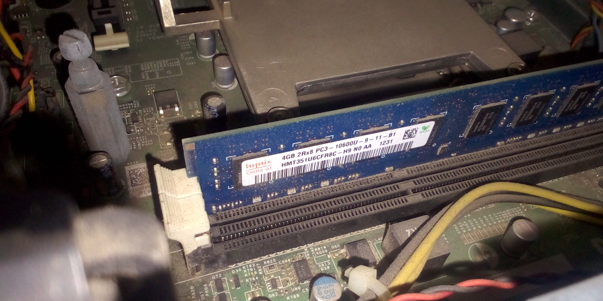
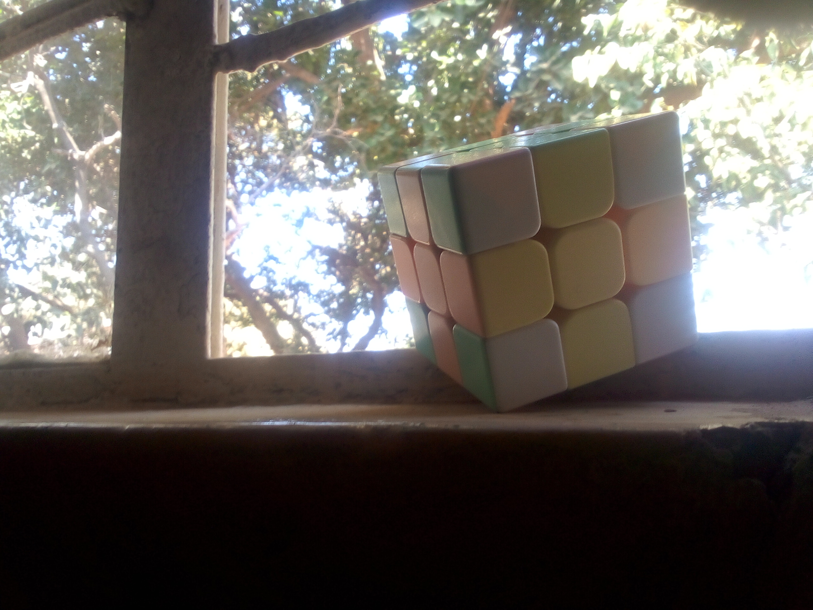
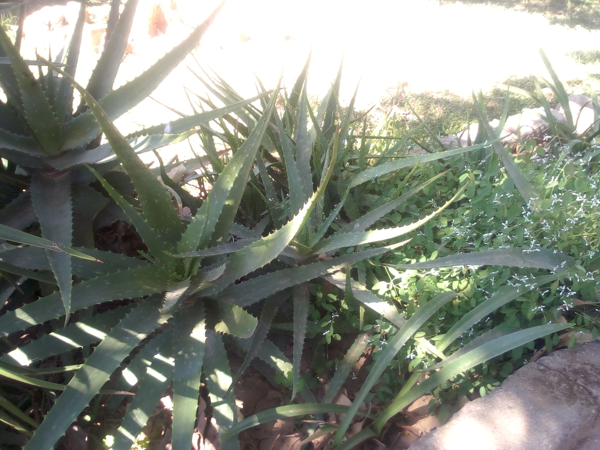

Welcome to Web Programming
Hello World! This is my first html document
Liamba Mufaya 202501125
My learning path
- Listening to music
- Reading
- Playing football
Improving my web skills
- I would like to learn javascript
- Understanding the DOM of html
- Knowing how to use react and node js fundamentals
My photos



My media
My contacts
w- liamba6455@outlook.com
- +2609772797019
About me
I am a driven and curious professional passionate about solving complex problems and creating meaningful impact. With a strong blend of creativity, analytical thinking, and effective communication, I thrive in dynamic environments. Always eager to learn and adapt, I continually
If you want to learn more about web programming you can visit The Odin Project